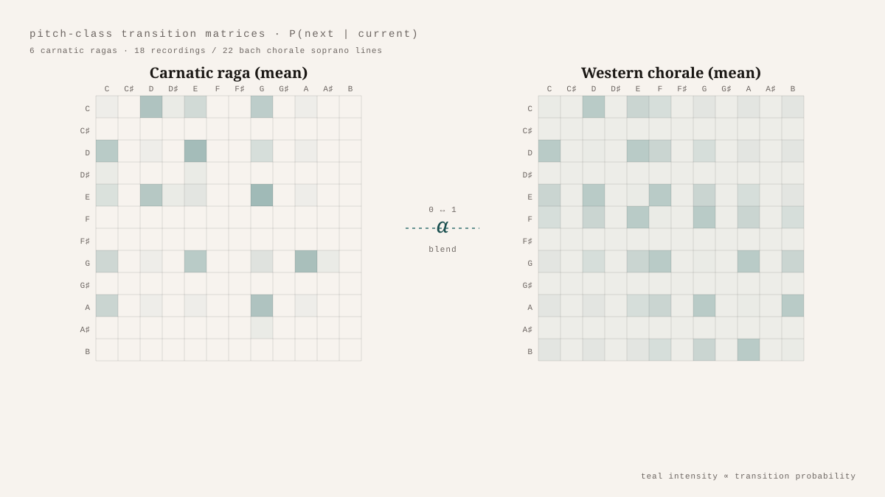

What Does a First-Order Markov Chain Know About a Raga?
A first-order Markov chain knows only the most recent thing. Asked to model a melody, it can tell you the probability that the next pitch class will be G given that the current one is D. That is the whole horizon: one step back. Anything that depends on the phrase, the contour, the build-up of an idea over the last twenty notes — invisible to it. The interesting question is how much of the structure of a musical tradition survives that compression.
To find out, six Carnatic ragas — Bhairavi, Kalyani, Kambhoji, Mohanam, Shankarabharanam, Todi — were recorded three times each, and twenty-two soprano lines from Bach chorales were assembled as a Western comparator. Audio went through the pYIN algorithm for fundamental-frequency extraction, was rounded into MIDI note numbers, then folded down into twelve pitch classes by taking the value modulo twelve. Each piece became a 12×12 matrix in which each row, normalised, gave the conditional probability of the next pitch class given the current one.
The raga matrices are sparse and the Western matrices are not. Each raga concentrates mass on a small number of high-probability transitions — the pitch classes the raga allows, the moves the tradition expects. Bhairavi clusters around C, D♯, and A♯. Kalyani highlights its augmented fourth with a strong B-to-F♯. Mohanam's pentatonic constraint shows up as a transition matrix with broad zero rows. The Western aggregate, by contrast, spreads its mass: diatonic motion makes many pitch-class pairs probable, and the soprano-line average pools across many tonal contexts.
The Jensen-Shannon divergence between any two matrices — bounded, symmetric, zero when distributions match — gives a clean measure of how stylistically distant they are. Computed across all 40-by-40 pairs of files, the JSD matrix has visible blocks: an 18×18 raga block and a 22×22 Western block, both cooler along the diagonal than the off-diagonal between them. The within-raga distances are significantly tighter than the between-tradition distances (Mann-Whitney U, p = 0.021). The within-Western distances are not (p = 0.056). Six ragas across eighteen recordings cluster more tightly than twenty-two Bach chorales do amongst themselves. The raga tradition is rule-defined in ways that survive compression to a Markov chain. The Western tradition is harmonically defined, and harmony lives several pitch-class transitions away.
Blending the two aggregate matrices linearly — M(α) = α·Mraga + (1−α)·Mwestern — is a convex combination of stochastic matrices, which means it remains a stochastic matrix for every α. Sequences generated from the blend shift continuously from Western-like to raga-like as α moves from zero to one, with the crossover at α ≈ 0.55. There is no discontinuity. The blending is the mathematics doing exactly what it is supposed to do.
What the model cannot do is also part of what it knows. A first-order Markov chain has no gamaka — no oscillations, slides, or microtonal inflections, all of which a Carnatic listener would say are the raga. It has no pakad, the characteristic phrase by which a raga is recognised. It has nothing above one-note context. What it has is the surprising sufficiency of pairwise transitions to separate two traditions cleanly in the data. That sufficiency is not the whole story of a raga. But it is more of the story than a model this transparent has any right to capture.